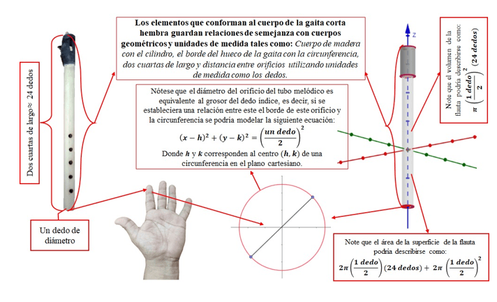

Momento 2
Para el desarrollo de este momento, primeramente, se hace un análisis de la producción audiovisual obtenida en el momento 1, este análisis debe estar direccionado a aspectos que se encuentren dentro de la matemática que se enseña en la escuela, como lo son el empleo de unidades de medida, figuras geométricas, cuerpos geométricos, es decir, se hará un análisis que conecte las similitudes de la práctica cultural con la matemática escolar. A partir de este análisis hecho, se procede a modelar la práctica cultural o el objeto que emerge de esta práctica, para este caso, la gaita corta hembra en los softwares de Tinkercad y GeoGebra, ya que éstos son gratuitos y están al alcance de cualquier persona que tenga dispositivo como Smartphones, tabletas o computadoras.
El proceso de modelación de la práctica cultural, también será desarrollada audiovisualmente, con el propósito de mostrar a la comunidad en general a partir de redes sociales cómo se podría modelar este instrumento musical.
A continuación, se adjuntarán los links de YouTube sobre la entrevista y la modelación 3D de la gaita en Tinkercad explicada usando figuras geométricas:
ENTREVISTA: https://youtu.be/shcWRsyIpsU?si=GbJXegCARjVDX4zu
MODELACIÓN: https://youtu.be/6AIXVDUpdxQ?si=4a_jEQdZ6nlcIbZs
Así mismo, a partir de los modelos creados, se diseñan actividades que relacionen la práctica con la matemática escolar, para así proponer futuras acciones pedagógicas que integren estos tres componentes (cultura, tecnología y matemáticas).
Aquí está la relación matemática de la practica sociocultural con temas que se enseñan en la escuela:
